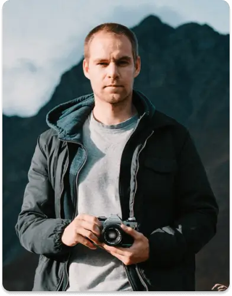

‘Helaing holidays’ are on the rise tohelp maximise your health and happines...
Read more

Explore and Travel
Holiday finder


.svg)
A new way to explore the world
For decades travellers have reached for Lonely Planet books when looking to plan and execute their perfect trip, but now, they can also let Lonely Planet Experiences lead the way
Guides by Thousand Sunny
Packed with tips and advice from our on-the-ground experts, our city guides app (iOS and Android) is the ultimate resource before and during a trip.
Download
Testimonials

“Quisque in lacus a urna fermentum euismod. Integer mi nibh, dapibus ac scelerisque eu, facilisis quis purus. Morbi blandit sit amet turpis nec”




“Quisque in lacus a urna fermentum euismod. Integer mi nibh, dapibus ac scelerisque eu, facilisis quis purus. Morbi blandit sit amet turpis nec”

Trending stories
View all
From tofu to teahouses, here’s our guide to Kyoto’s best restaurants to visit...
Read moreIt’s remote and challenging to get, but braving the jungle and exploring these ruins without the...
Read moreIf learning to surf has in on your to- do list for a while, the good news is: it’s never too late...
Read more